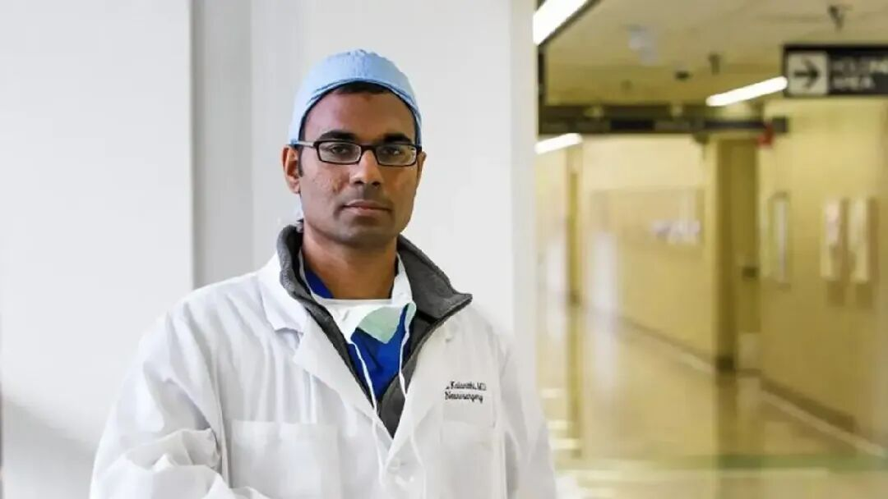
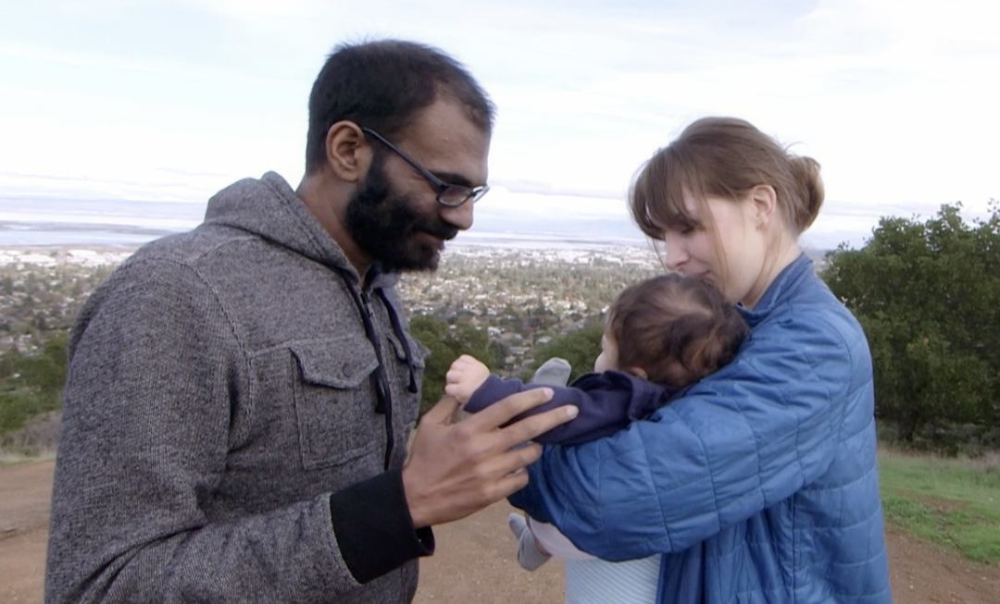
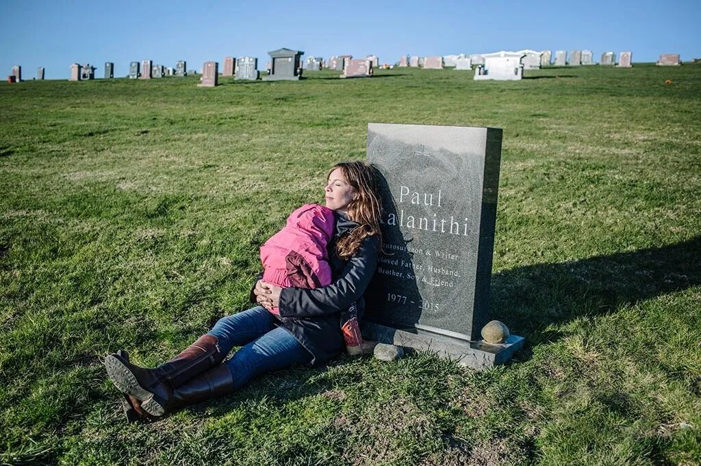

呼吸化为空气之后
2016年1月，美国神经外科医生及作家保罗·卡拉尼什（全名：Paul Sudhir Arul Kalanithi）的自传《当呼吸化为空气》发表，该书在2017年与普利策奖失之交臂。然而此时，获奖与否对作者已无意义，因为保罗早于2015年3月因肺癌去世。保罗不到38年的短暂生命里，与癌症抗争的日子占去了近两年。

保罗不仅是神经外科医生(neurosurgeon)，还是神经科学家(neuroscientist)。对于一个医生来说，这是莫高的荣誉。美国医疗体系中，医学生结束住院医师培训后即成为Attending，其后续晋升无科研要求。同时，医生在美国属于毋庸置疑的高薪职业，外科医生平均年薪在25万美元以上，即使是还未成为正式医师的住院医生，每年也能拿到超过6万美元。学生报考医学院的动机，大概可以参考我国香港地区。优渥待遇下，只有少部分学生会对科研产生兴趣，更少人能在完成繁杂的临床工作同时取得不错的科研结果。保罗就是其中之一。
保罗于1977年4月1日出生于纽约威彻斯特郡。这一天是愚人节，这是命运给他开的第一个无关痛痒的玩笑。保罗的父母均来自印度，父亲是心脏外科医生，基督教徒；母亲从事教育，信仰印度教。这应该是个宗教氛围相当浓厚的家庭，而少年保罗对宗教并无兴趣，直到接触文学与从医，他才逐渐清晰自己的信仰。保罗的父亲、叔叔和哥哥都是医生，可以说，保罗出生于医生世家。而哥哥又专攻神经内科，对保罗不无影响。
10岁时，保罗随家人搬至亚利桑那州的金曼。这是一个山脉之间的沙漠谷地上的小城，人口不到两万，名人榜上连环杀人犯的名字高居榜首，距离拉斯维加斯不到200公里。据保罗的回忆，这里一片荒芜，不时有蛇袭击。
从纽约的富裕郊区搬到寸草不生之地，是个令人费解的决定。但保罗父亲的事业因此得益，他创建了属于自己的心脏专科诊所，而这里低廉的生活成本让他把三个儿子都送进名牌大学的期望成为可能。早出晚归的父亲，总是只给童年保罗留下一个萧瑟的背影。从那时候开始，保罗就对做医生的代价深有体会。
如果说搬家是为了把儿子们都送进大学，那么还有一个致命问题——这里的教育资源远远落后于威彻斯特。金曼是官方认证的人口接受教育程度最低的地区之一，大多数人根本没机会上大学，即使天资聪颖，也大多因为负担不起学费转而参军。在二十世纪六十年代的印度农村，保罗的外祖父顶住重重压力保障了女儿的教育，才将保罗的母亲送进了大学，因此，她深知教育的重要性。她亲自加入学校董事会，重整了教师队伍，并在课程设置中加入大学预科课程。而她的另一个行动，则给保罗埋下了文学的种子。
保罗的母亲找来大学学前书单，自十岁起，保罗就开始系统阅读各种文学作品，包括果戈理、梭罗、萨特等人的作品。申请大学时，保罗论述文的主题便是围绕《美丽新世界》中的道德哲学，在斯坦福的本科时期，他的专业也正是英语文学。
沿着这条路，他本该成为一个文学教授、著名作家，而这也是他原本打算走的路。但他意识到文学研究与科学间不可调和的矛盾，而书本也无法提供当下生活的所有答案。在剑桥得到科学史与哲学硕士学位后，他进入耶鲁医学院，开始了他的医学生涯。
在耶鲁，保罗优秀的完成了他的学业，还遇见了他后来的妻子，露西。毕业后，保罗回到斯坦福，开始住院医师生涯。不同于文学和医学院的纸上谈兵，医院工作的每一天都像没有硝烟的战争。每天都有不可避免或可避免的死亡，病人走进医院的那一刻，人生轨迹就被改写。住院医生的工作时间在每周一百小时左右，远超官方规定的最长时间八十八小时，而保罗所在的神经外科又尤以高难度手术著称。保罗并未因此丧失热情与同情心，而是常常反思自身。后来回忆时，他认为他其实在追求一个牧师的角色——如果年少时接触宗教更多一些，他也许会成为一个真正的牧师。当手术刀已无能为力时，言语就成为医生唯一的工具。
神经外科手术尤其特殊，稍有不慎，就会带来意想不到的结果：性格转变、语言功能缺失、瘫痪。在生的选择面前，一个神经外科病人面临着失去某些个人特征的威胁。而究竟要失去“自我”到什么程度，才能让一个人甘愿放弃自己的生命？这是个无解的谜题，这也是保罗痴迷于神经外科的原因之一。
这条路上不是没有困难。身体上的疲惫和精神上的双重压力会让许多住院医生半途而废，转而进入更轻松的医疗相关行业，这已经是比较好的结果。而保罗住院时期的好友杰夫，在住院生涯即将结束时，再也无法忍受日复一日的高压，从医院楼顶一跃而下。繁忙的工作也给保罗的婚姻带来了缝隙。露西在加州大学旧金山分校，同样接受着残酷的住院医师培训，连轴转的工作中，两人连话都难得说上一句。但前景是美好的：住院生涯一结束，双医生的收入相当可观，他们可以轻松买下一栋湖边的别墅，和想象中的孩子们一起划船。而保罗已经拿到斯坦福的口头offer，等到毕业后，他将不仅是独立执业的医生，还会作为教授领导一个实验室。而住院生涯只剩下不到一年，这一切已经近在咫尺。
好防佳节元宵后，便是烟消火灭时。这是红楼的慨叹，亦是人生的慨叹。2013年5月，保罗确诊Ⅳ期肺癌。四个月后，保罗重回手术室；12月，保罗结束住院生涯，成功毕业；2014年1月，他们的女儿Cady诞生。余生最引以为傲的两件事，他在两年以内完成了。

生命的最后，一向奉持无神论的保罗回到基督教义：牺牲、救赎和宽恕（sacrifice，redemption，forgiveness）。这并不意味着他期待奇迹的发生。科学和宗教，也许只是一体两面，每个人站在自己的立场上，都只能看到生命的局部。个人从科学或宗教任意一面解读生命，注定是徒劳。
保罗葬在旧金山圣克鲁斯山脚的角落，墓碑面朝太平洋。
保罗去世一年后，露西重新装修了她和保罗度过了整个住院生涯的公寓。装修完成后，她终于松了一口气：“This feels so fresh，and I suddenly feel fresh.”2018年，露西和John重陷爱河。John的妻子Nina Riggs是一名作家与诗人，17年死于乳腺癌。至今，露西仍然作为内科医生与教授在斯坦福工作，仍保留着保罗的姓氏Kalanithi。放假时，她会和Cady飞到北卡罗来纳州和John和他的两个儿子见面——Cady和他们相处得很好。
前文介绍过，保罗的哥哥，Suman Kalanithi是神经内科医生，而保罗的弟弟，Jeevan Kalanithi后来成为OpenSpace（一个在建筑行业应用人工智能与计算机视觉的公司）的联合创始人之一和CEO。兄弟三人本科都毕业于斯坦福。

保罗的故事结束了。19年，我在机缘巧合下买下《当呼吸化为空气》这本书，到如今读了不下十五遍，对于一个懒人（本想写懒癌，想想相比于真正的癌症患者，还没到那种地步）来说，已是一项壮举。这本书是我离家上大学时带着的唯一一本书。甚至，我还动过转而学医的念头，但又是一些机缘巧合，这个念头最终也没成为现实，但也没什么遗憾的。保罗的故事和文字陪伴了我的少年时期，但也终究只是千万个故事中的一个，每个人都有自己的机缘巧合，没有谁的故事能真的改变谁的人生，正如保罗在序幕的引用：“新人尚未可知，故旧早已逝去”。
我想以《一个医生的信仰》中的话结尾：“我们身负奇迹而行，却在自身之外寻找奇迹；作为人类摇篮到非洲和她的奇观，都蕴含在我们身体里；我们是自然大胆冒险的造物，研究自然者，如若睿智，则提纲挈领，研究人类足矣，其他人则孜孜以求，埋首于分裂的碎片与浩繁的卷帙。”这版翻译太自大，但人类又何尝不自大，我们又何尝不自大呢。
附：中文版序言由吴承瀚教授着笔，当时他在斯坦福做博后，与保罗擦肩而过。如今，他已是浙江大学医学院附二院神经外科的主治医师。